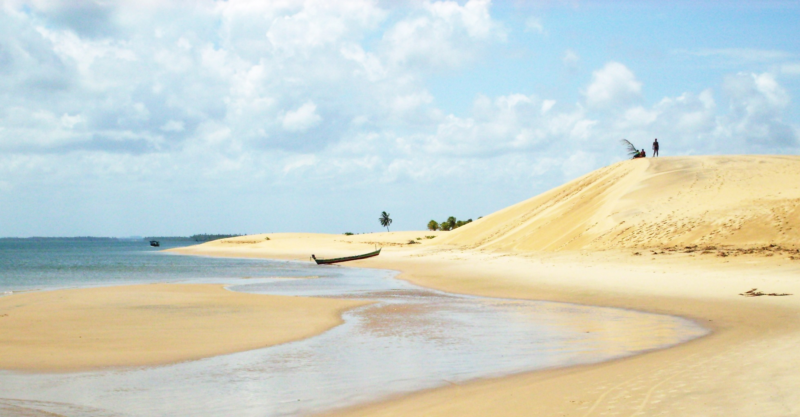

Brejo Grande
História
Os índios Tupinambás viviam na Ilha de Paraúna, doada a Antônio Cristóvão de Barros em 1590. Pertencendo inicialmente a Província de Pernambuco, passou em 1812 para a Capitania da Bahia, também graças à ação de José Alves Tojal, um homem local e influente que aterrou parte do canal do rio São Francisco, unindo a ilha à margem sul.
Em 1824, nos terrenos alagadiços da outrora ilha, perto da foz do São Francisco, migrantes alagoanos, pernambucanos e cearenses se estabeleceram e com o apoio do Barão Bento de Melo fundaram o povoado de Brejo Grande. Em 1826 houve no local um movimento pró-república, graças aos imigrantes pernambucanos que vieram para o povoado, mas que foi logo contido. Em 2 de outubro de 1926 foi desmembrado de Vila Nova (atual Neópolis) e elevado à categoria de cidade, com a denominação de São Francisco; em 1943 passou a chamar-se Parapitinga e somente em 1954 voltou a denominar-se Brejo Grande.
fonte: https://brejogrande.se.gov.br/historia-da-cidade/Pontos Turísticos
Igreja de Nossa Senhora da Conceição
A igreja de Nossa Senhora da Conceição foi construída em 1893 pelos padres jesuítas com a ajuda dos índios tupinambás que habitavam naquela região. A igreja possui um acervo de imagens, sendo a maior parte delas esculpidas em madeira, menos a do Sagrado coração de Jesus que é em gesso, que veio de Paris, na França, um presente do Papa Pio IX, quando foi fundado o Apostolado da Oração em Brejo Grande em 16 de novembro de 1913, com a ajuda de Ermelina Tojal, Zeladora da paróquia.
Farol do Cabeço
O povoado Cabeço foi quase que totalmente tomado pelas águas do rio São Francisco e do oceano Atlântico, mas o antigo farol da vila virou símbolo de resistência e passou a ser ponto turístico da região. O farol do Cabeço é um espetáculo à parte no passeio que se faz até a foz do São Francisco. O farol fica dentro da água e possui apenas uma ponta descoberta. As praias fluviais e dunas, além de restingas de mangue também são atrações da localidade.
Dados Gerais de acordo com o IBGE
| Prefeito (a) | Clysmer Ferreira Bastos |
| Vice-Prefeito (a) | Edivania Ramalho Teles |
| Site do município | https://brejogrande.se.gov.br/ |
| Área territorial | 141,464 km² |
| População estimada | 8.396 pessoas |
| Densidade demográfica | 52,01 hab/km² |
| IDHM | 0,540 |
| PIB per capita | R$ 10.750,46 |